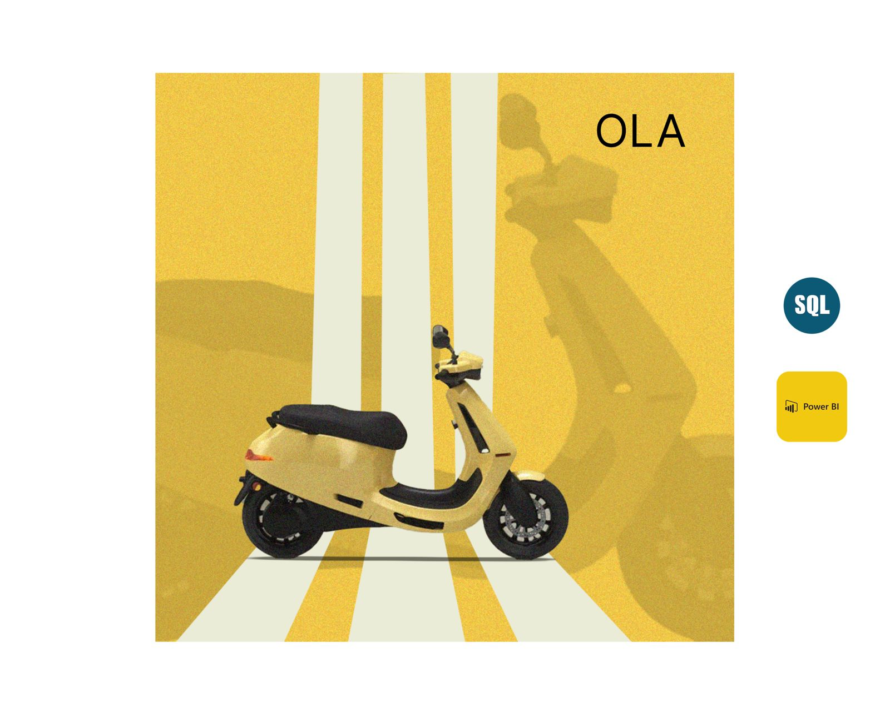

Aim was to analyse customer ticket and get out insights about categorisation of issues, for example which age group is facing major issues, type of issues weather technical or general and which products are facing the major problems etc. Also analysing the time of resolution of issues for enhanced customer experience.
This project provides a data-driven analysis of global population trends, helping policymakers, businesses, and researchers make informed decisions.
This data-driven approach to EV sales analysis empowers businesses, policymakers, and investors to make strategic decisions for accelerating EV adoption in India.
This project involves running SQL queries to extract business insights.I have completed 10 sql queries for this analysis. (CodeBasics challenge)
This project successfully cleaned and analyzed layoff data, ensuring accuracy and extracting meaningful insights.

The Ola Ride Dashboard and SQL analysis successfully provides insights into ride trends, cancellations, vehicle performance, payment preferences, and customer-driver ratings.
The Mobile Sales Dashboard provides valuable insights which can help businesses optimize inventory, target high-performing cities, and focus on best-selling models.
The insights gained from this project can help in strategic decision-making, such as expanding successful outlet types, focusing on high-revenue product categories, and improving customer experience.
This Dashboard visualizes key business metrics, enabling data-driven decision-making.And demonstrates the power of Excel in handling business analytics, providing actionable insights that can drive business growth.